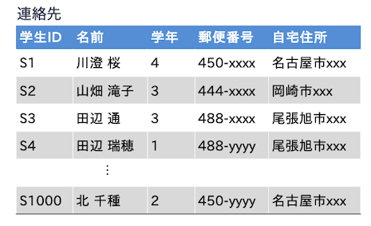
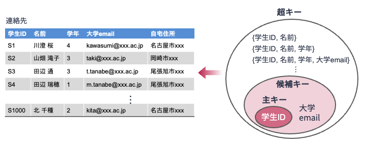

3. 関係データモデル#
関係データベース（relational database） とは，関係データモデルに基づき表現されたデータの集まりである． 前章で述べたように，関係データモデルとは表によってデータを表現するデータモデルである． 冗長性を排除し効率よくデータを処理・管理するために，一見すると単純な表にしか見えない関係データモデルは数学によって定式化されており，強固な理論的基盤を有している．
以下では，数学的な観点から関係データモデルについて述べる． 少々堅い説明にはなるが，関係データベースという計算機科学技術が数学に支えられていることを知るためにも，眠気を我慢して読んでもらいたい． なお，本章では数学における「集合と写像」の知識を使う． 最低限の知識をコチラにまとめたので，不安がある方はそちらを参照しながら本章を読むこと．
Note
計算機科学とは抽象化の学問
計算機科学（あるいは情報科学）というと「プログラミングでしょ」と考える学生は多いのであるが，それは間違いである． 計算機科学の本質は，物事を計算可能な状態にする（抽象化）し，計算機の上で処理・分析することにある． データベースもその一つである． 計算機科学は抽象化の学問なのである．
3.1. 関係データモデルのデータ構造#
上の表は，ある小売店で取り扱っている商品のデータを関係データモデルによって表現したものである． この表の各行は小売店で取り扱っている商品に対応し，各列には各商品に関するデータが記述されている． 表の左上にある「商品」はこの表の名前を示しており，関係名と呼ばれる． 各行について，関係データモデル上ではタプル（tuple） と呼ばれる． 表の1行目には「商品」がどのようなデータを持つかを示す見出しが付けられている． 各見出しのことを属性（attribute），各タプルにおけるある属性の値を属性値と呼ぶ． 例えば，表中の2行目のタプルは
(“P1”, “はーいお茶”, 130, “2020/07/15”)
であるが，このタプルの属性「単価」の属性値は130となる．
3.1.1. 数学における「関係」#
ところで，関係データベースあるいは関係データモデルの「関係」とは一体何だろうか． 関係（relation） とは，数学の上の概念の一つである． 集合\(S_1, S_2, ..., S_n\)が与えられたとき，それらの直積集合\(S_1 \times ... \times S_n\)とは
\(S_1 \times ... S_n = \{(x_1, ..., x_n) \ | \ x_1 \in S_1, ..., x_n \in S_n \}\)
と表現されるものである（直積の概念を忘れた方はコチラを確認すること）（★Quiz1★）． （数学上の概念である）関係とは，このような直積集合の部分集合を意味する． 正確に書くと，集合\(S_1, S_2, ..., S_n\)が与えられたとき，直積集合\(S_1 \times ... \times S_n\)の部分集合を\(S_1, S_2, ..., S_n\)上のn項関係と呼ぶ．
例えば，\(A=\{2, 3\}\)，\(B=\{-2, -3\}\)が与えられたとき，直積\(A \times B\)は集合AおよびBの要素のすべての組み合わせであるから
\(A \times B = \{(2, -2), (2, -3), (3, -2), (3, -3)\}\)
となる． そして，その部分集合の1つである
\(\{(2, -3), (3, -2)\}\)
は集合AおよびB上の2項関係となる． このような（n項）関係の概念を使って，関係データモデルは理論構築されている（★Quiz2★）．
3.1.2. 関係データモデルにおける「関係」#
さて，関係データモデルにおける関係は「数学におけるの関係」を拡張したものになっており，以下の2つから構成される．
関係スキーマ
インスタンス
関係スキーマ（relation schema） とは，関係の名前と属性の集合，および（後述する）一貫性制約の情報を示すものである． 関係スキーマは
\((\boldsymbol{R}(A_1, ..., A_n), \{\sigma_1, \sigma_2, ..., \sigma_m\})\)
の形式で記述される． ここで
\(\boldsymbol{R}\)は関係名
\(A_1, ..., A_n\)は属性
\(\sigma_1, ..., \sigma_m\)は一貫性制約
に対応する． 一貫性制約が自明な場合やそれを考慮しないときは，関係スキーマを
\(\boldsymbol{R}(A_1, ..., A_n)\)
のように簡潔に表記することもある． 先の表「商品」の例の場合，関係スキーマは
\(商品（商品ID, 名称, 単価, 登録日）\)
と記述する（★Quiz3★）．
関係スキーマに記された各属性には，属性が取り得る値の集合を定義することになる． この集合はドメイン（domain; 定義域） と呼ばれ，属性\(a\)のドメインは\(Dom(A)\)と記すことにする． 例えば，先の表「商品」の例では，属性「単価」は金額を表すので，そのドメイン\(Dom(単価)\)は0以上の整数値が想定される． これを数学的に記すと，以下のようになる:
\(Dom(単価) = \{ x \ | \ x \in \mathbb{N} \}\)
同様に，属性「商品ID」「名称」「登録日」についても，以下のようにドメインを定義できる．
\(Dom(商品ID) = \{ x \ | x \in Pから始まる文字列集合 \}\)
\(Dom(名称) = \{ x \ | \ x \in 文字列集合 \}\)
\(Dom(登録日) = \{ x \ | \ x \in 年月日集合（ただし西暦表記） \}\)
インスタンス（instance） は，関係スキーマ\(\boldsymbol{R}(A_1, ..., A_n)\)におけるドメイン\(Dom(A_1), ..., Dom(A_n)\)の直積の部分集合である． 仮にインスタンスを\(R\)とすると，
\(R \subset{Dom(A_1) \times ... \times Dom(A_n)}\)
である． インスタンスとは，上で説明した数学上の関係に相当する（あらためて「数学における関係」の節を確認してみよう）． また，インスタンス\(R\)の要素がタプルとなる．
例に戻って，定義と照らし合わせてみよう． 先の表「商品」の関係スキーマは「商品（商品ID, 名称, 単価, 登録日）」であった． 各属性のドメインの定義も与えたが，その定義から，例えば属性「単価」については
\(Dom(単価) = \{1, 2, 3, .... 10000, .... \}\)
のようにあらゆる自然数を取り得る． また，属性「名称」については
\(Dom(名称) = \{あ, い, ..., はーいお茶, ... \}\)
のようにあらゆる文字列を取り得る．
各属性の直積\(Dom(商品ID) \times Dom(名称) \times Dom(単価) \times Dom(登録日)\)の要素には，
(“P001”, “こんな商品はありません”, 100兆, “2020/01/01”)
のように，実際に商品としてありえないタプルも含めて，様々なタプルが入っている． なぜなら，直積とは集合（ドメイン）の要素のすべての組み合わせであるためである． インスタンスがドメインの直積の部分集合であることは，取り得るタプルの候補から実際にデータとして扱われるタプルの集合に注目していることを意味する（★Quiz4★）．
Warning
タプルは重複が許されない
一般的に使われる表には同じ内容を表す行が複数あっても許される． 一方，関係データモデルに基づく表は行，すなわちタプルの重複は許されない． なぜなら，関係データモデルのインスタンスは集合だからである．
3.2. 非正規関係と第1正規形#
関係データモデルにおけるドメインは属性が取り得る値の集合であるが，取り得る値の要素はそれ以上分解不可能な値である原子値（atomic value） を対象としている． 原子値の例としては，文字列，整数，実数，真偽値，日付などが挙げられ，どれもデータの基本単位と呼べるものである． 逆に原子値で「ない」例としては，タプルや集合，関係などが挙げられる． ドメインとして原子値以外の値をとることを許す関係を非正規関係（unnormalized relation） と呼ぶ（ドメインに原子値しか許さない関係は正規関係）． 逆に，ドメインとして原子値しかとらない関係を第1正規形（first normal form; 1NF） と呼ぶ．
例えば，以下の図の表(a)(b)はともに商品の購買履歴を表しているが，表(a)は属性「購入品目」に集合要素が入ってしまっている（例えば，{“はーいお茶”, “きのこの里”, “のど飴”}）． 表(a)の属性「購入品目」のドメインが原子値以外の値（つまり文字列の集合）を許してしまっており，表(a)は非正規関係と見なせる．
一方，表(b)は表(a)の購買品目の値が原子値（文字列の集合ではなく文字列）になるようにモデル化されているため，第1正規形と見なせる． 表(a)では1行で表現できていた1回分の購買データが，表(b)では複数行を使って表現されている． 表(b)のほうがデータ構造が簡潔になるため，データ処理がしやすくなる．
3.3. 一貫性制約#
一貫性制約（integrity constraint） とは，データベース上のデータが実世界を正しく反映している状態を保つために設定される，データが満たすべき規則である． 関係データモデルにおいては，代表的な一貫性制約として以下のものがある：
ドメイン制約
キー制約
参照制約
データ従属性
3.3.1. ドメイン制約#
ドメイン制約（domain constraint） とは，関係\(\boldsymbol{R}(A_1, ..., A_n)\)に含まれるタプルの各成分は，対応する属性のドメインの要素でなければならならいという制約である． これは属性の定義ですでに触れたことである． ドメイン制約では，各属性のドメインのデータ型（例: 整数，実数，文字列，日付）に加えて，値の取り得る範囲を指定することもある． 例えば，
先の例でとりあげた関係「商品（商品ID, 名称, 単価, 登録日）」において，属性「単価」や「登録日」のドメインは
\(Dom(単価) = \{ x \ | \ x \in \mathbb{N} \}\)
\(Dom(登録日) = \{ x \ | \ x \in 年月日集合（ただし西暦表記） \}\)
のように定義されていた． これらはドメイン制約である． これら制約からは，
「単価」属性の値は必ず自然数
「登録日」属性の値は必ず西暦表記の年月日集合
にならなければならない． よって，以下の関係「商品*」は関係「商品（商品ID, 名称, 単価, 登録日）」のインスタンスにはなれない． なぜなら，
商品IDがP1の商品の登録日は年月はあるが日が抜けている
商品IDがP2の商品の登録日は和暦で表現されている
商品IDがP1000の商品の単価は漢数字（文字列）で表現されている
からである（★Quiz5★）．
3.3.2. キー制約#
まず，キー制約の前提となるキーの概念について説明する． 関係\(\boldsymbol{R}\)における超キー（super key） とは，関係\(\boldsymbol{R}\)における属性の集合のうち，それらの属性値が決まればおのずと関係\(\boldsymbol{R}\)のタプルが唯一ひとつに決まる（タプルを一意に特定できる）ものを指す．
例えば，以下の表は関係「連絡先（学生ID, 名前, 学年, 大学email, 自宅住所）」を表形式で記したもので，各行（タプル）は学生の連絡先情報を示している． このような表（関係データベース）を大学で利活用していく場合，学生IDの重複はありえない． また，学生ID（の値）が決まれば，唯一1つの学生連絡先情報（行; タプル）を照会することができる． それゆえ，この関係「連絡先」において属性「学生ID」は超キーとなる． 同様に，属性「大学email」も超キーとなる．
なお，{学生ID, 名前}，{学生ID, 名前, 学年}のように学生IDを含む属性の集合も超キーになる．
例えば，「学生ID」がS1，「名前」が川澄桜である行は唯一1行に決まるので，属性集合{学生ID, 名前}は超キーになる．
これは属性「学生ID」が超キーであるから，当たり前である．
一方，属性「住所」は超キーにはなり得ない． 学生IDがS3とS4の学生の住所が同じ（つまり同じところに住んでいる）であるから，住所を1つ指定しても連絡先タプルが一意に特定できないからである．

超キーは複数ありえるが，上の例では属性「学生ID」のみでタプルを特定できるため，属性集合{学生ID, 名前}を使ってタプルを特定しようとするのは無駄であろう．
そこで，超キーのうち極小（つまり最も小さい部分集合）のものを候補キー（candiate key） と定義する．
候補キーは単純にキー（key） と呼ばれることもある．
例えば，上の関係「連絡先」では，属性「学生ID」や「大学email」が候補キーとなりえる（★Quiz6★）．
最後に主キー（primary key） の概念を導入する． 候補キーのうち，データベース管理上都合のよいキーの1つを主キーと決める． 主キー以外の候補キーは代替キーと呼ばれる． 例えば，先の関係「連絡先」の場合，候補キーは「学生ID」と「大学email」であったが，大学emailは「氏名@xxx.ac.jp」のようなものから「学籍番号@xxx.ac.jp」のようなものに変更される可能性があったとしても，学生IDは一度決めたらほぼ変わらないと思われる． これらを鑑みると，関係「連絡先」においては属性「学生ID」が主キーとして選ぶのがよい．
なお，候補キーの定義から主キーは属性の集合をとることができる． このような主キーを複合主キー（composite primary key） と呼ぶ．
例えば，上の表は，学生が履修した科目の成績をあらわす関係「履修」を表にしたものである．
この表においては，科目IDあるいは学生IDだけでは成績が特定できないが，科目IDと学生IDが決まればある学生のある科目の成績が特定される．
それゆえ，関係「履修」においては{科目ID, 学生ID}の属性ペアが主キーとなる（★Quiz7★）．
関係表と主キー，候補キー，超キーの関係は，以下の図のようにまとめることができる．

ここまで，超キー，候補キー，主キーの説明を行ったが，最後に本節の主題であるキー制約について述べる． キー制約（key constraint） は，関係\(\boldsymbol{R}\)の関係スキーマに対して主キーが設定されたとき，\(\boldsymbol{R}\)のインスタンスにおいては
その要素（タプル）は主キーによって一意に特定されなければならない，かつ
主キーとなる属性の値は未定義（要するに空） であってはならない
という制約である． 定義は小難しく見えるかもしれないが，キー制約は「ある属性が主キーと設定されたら，それがきちんと主キーの役割を果たすようデータが作られなければならない」ということを意味している． 主キーを定義できれば，キー制約を定義できたようなものである．
さて，関係スキーマにおいてキー制約以外の一貫性制約には注目しない場合，関係\(\boldsymbol{R}\)の関係スキーマは以下のように主キーに下線を引いて表す．
\(\boldsymbol{R}(\underline{A_1, A_2}, ..., A_n)\)
例えば，上の図の関係「連絡先」であれば，その関係スキーマは以下のように表す．
\(連絡先(\underline{学生ID}, 名前, 学年, 大学email, 自宅住所)\)
Important
キーは関係スキーマに対して設定される
キーは，関係データベース内にあるタプル（行）だけを見て決めてはいけない． 例えば上の例の関係「連絡先」の場合，表の見えているところだけに注目すると，属性「名前」もキーに見える． しかし，現実的には同性同名の学生が存在しうる． そのため，「名前」をキーにすると，連絡先のタプルを一意に特定できない可能性が生じる（キーの性質を失う）．
そもそも関係データモデルにおいては，どのようなデータをデータベースに格納する可能性があるかを事前に想定して関係スキーマを設定する（その中にキーの設定も含まれる）． その上で，設定した関係スキーマに従ってデータを生成し格納する． 決してインスタンスを見てキーを決めるわけではない． キーは「関係スキーマに対して設定される」ことを意識しよう．
3.3.3. 参照整合性制約#
（関係データモデルにもとづく）関係データベースでは，対象となる事象のデータを正しく管理するために，データを複数の関係（表）で管理することがほとんどである． 複合主キーの説明の例で使った関係「履修」には，それが具体的に何を意味するのかは不明な属性「科目ID」「学生ID」がある． しかし，これらの意味を読み解くためには
「科目ID」がどのような科目のことを指しているのか
「学生ID」がどの学生のことを指しているのか
といった情報を管理する他の関係（表）が必要となる． 以下の図は，学生の成績を管理するための関係データベースの例である． この中には関係「履修」も含まれている．
上記3つの関係表があれば，関係「履修」において「学生ID」がs0001で「科目ID」がc0001の「成績」が不可だった件について，具体的にどんな学生が何の科目を落としてしまった（不可になってしまった）かを把握することができる．
具体的には，
関係「学生」から「学生ID」が
s0001のものを探し，関係「科目」から「科目ID」が
c0001のものを探す
ことで対応できる．
このとき，関係「履修」のタプルにある「科目ID」の「c0001」という値が，関係「科目」のインスタンスの属性「科目ID」に含まれていなければならない（関係「科目」の科目IDの列にその値が存在しなければならない），ということは自明であろう．
関係「履修」の中にはあるが，関係「科目」には存在していなければ，データ管理として破綻していることになる．
「学生ID」のs0001についても同様である．
上記の例では，関係「履修」における
属性「学生ID」は関係「学生」の主キーである「学生ID」と
属性「科目ID」が関係「科目」の主キーである「科目ID」と
紐付いていることが分かる． 言い方を変えると，関係「履修」は属性「学生ID」および「科目ID」の値を通して，関係「学生」および「科目」の情報を参照していることになる．
このように，関係スキーマ\(\boldsymbol{R_1}(..., FK, ...)\)と\(\boldsymbol{R_2}(\underline{PK}, ...)\)が与えられ，\(R_1\)におけるタプルの属性\(fk\)の値が必ず\(R_2\)におけるいずれかのタプルの主キー\(PK\)の値と一致しているとき，\(R_1\)の属性\(FK\)を外部キー（foreign key） と呼ぶ． 先の例では，関係「履修」の属性「学生ID」および「科目ID」が外部キーとなる（★Quiz8★）．
前置きが長くなったが，本節のテーマである参照制約（referential constraint） とは「関係スキーマにおいて外部キーが設定されたとき，そのいかなるインスタンスも上記外部キーの条件を満たさなければいけない」という制約である．
3.3.4. データ従属性#
一貫性制約として，ドメイン制約，キー制約，参照制約を挙げてきた． 関係データモデルにはこれら以外にも，データ間に成立する制約を数学的に記述する手段がある． これをデータ従属性（data dependency） と呼ぶ．
データ従属性としては，関数従属性，結合従属性，多値従属性など，様々なものが提案されている． 関数従属性（functional dependency） は，データ従属性の中でも最も単純で，かつ実用的なものである． 関数従属性は，「関係\(\boldsymbol{R}(..., X, ..., Y, ...)\)において，属性（あるいは属性集合）\(X\)の値が決まると属性\(Y\)の値も一意に決まる」という性質である． このことを
\(X \to Y\)
と記す．
例えば，関係として
\(連絡先(\underline{学生ID}, 名前, 学年, 大学email, 郵便番号, 都道府県, 自宅住所)\)
が与えられたとしよう． 一般常識から住所が決まれば，住所がどこの都道府県に属しているか，郵便番号もひとつに決まる． このことから，関係「連絡先」においては
\(自宅住所 \to 郵便番号\)
\(自宅住所 \to 都道府県\)
という関数従属性が定義できる． 関数従属性はキー制約を一般化したものと捉えることができる．
データ従属性は，データの更新があったときにその影響が最小限になるような関係データベースを設計する上で重要な性質である． それゆえ，特に関数従属性については別章で取り上げる．
3.4. クイズ#
3.4.1. Q1. 直積#
集合\(S_{lang}\)，\(S_{popularity}\)，\(S_{difficulty}\)を以下のように定義する：
\(S_{lang} = \{Python, R, C^{++}\}\)
\(S_{popularity} = \{人気, 不人気\}\)
\(S_{difficulty} = \{難, 普通, 易\}\)
このとき，直積集合\(S_{lang} \times S_{popluarity} \times S_{difficulty}\)の要素をすべて列挙せよ．
3.4.2. Q2. 関係#
Q1で定義した集合\(S_{lang}\)，\(S_{popularity}\)，\(S_{difficulty}\)上の3項関係を適当に考えよ．
※ 正解は一意に決まらないので，深く悩まずクイズに取り組むこと．
3.4.3. Q3. 関係スキーマ#
関係スキーマ「学生（学籍番号, 氏名, 学部, 年齢, 出身都道府県）」に従う表データの例を作成せよ． なお，表の行数は見出し行を含めて5-6行程度でよい．
3.4.4. Q4. ドメイン#
Q3で定義した関係スキーマ「学生」の各属性について，そのドメインを定義せよ． その際，
\(Dom(学籍番号) = \{ ... \}\)
の形式で頑張って書いてみること．
3.4.5. Q5. ドメイン制約#
Q4で定義した関係スキーマ（ドメイン定義を含む）に対して，ドメイン制約に違反しているタプルの例を2，3個列挙せよ．
3.4.6. Q6. 候補キー（令和4年度 ITパスポート試験 問65改題）#
関係スキーマ「従業員（従業員番号, 従業員名, 部門コード, 生年月日, 住所）」において，候補キーは何か． なお，関係「従業員」は以下のような制約条件をもつ：
各従業員は重複のない従業員番号を1つだけもつ
同姓同名の従業員がいてもよい
各部門は重複のない部門コードを1つだけもつ
1つの部門には複数名の従業員が所属する
1人の従業員が所属する部門は1つだけである
3.4.7. Q7. 主キー#
以下の表「会員管理」において，想定される主キーは何か．
3.4.8. Q8. 参照整合性制約#
以下の関係スキーマをもつ5つの関係からなるデータベースにおいて，整理すべき参照整合性制約をあげよ．
\(顧客(\underline{顧客ID}, 氏名, 性別)\)
\(店舗(\underline{店舗ID}, 店舗名, 住所)\)
\(商品(\underline{商品ID}, 商品名, 商品カテゴリID, 単価)\)
\(購買(\underline{購買ID}, 店舗ID, 顧客ID, 商品ID, 個数, 購買日)\)
\(商品カテゴリ(\underline{商品カテゴリID}, カテゴリ名)\)